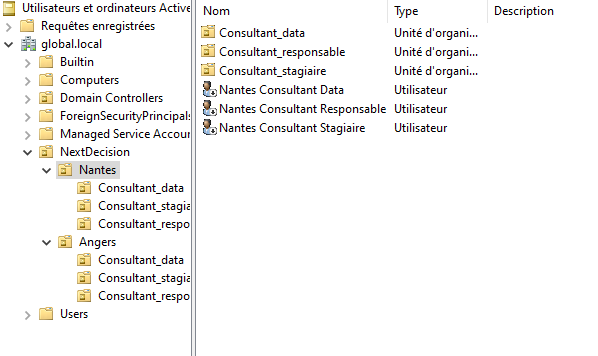
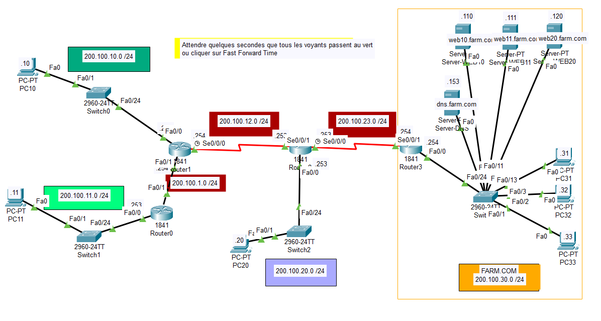
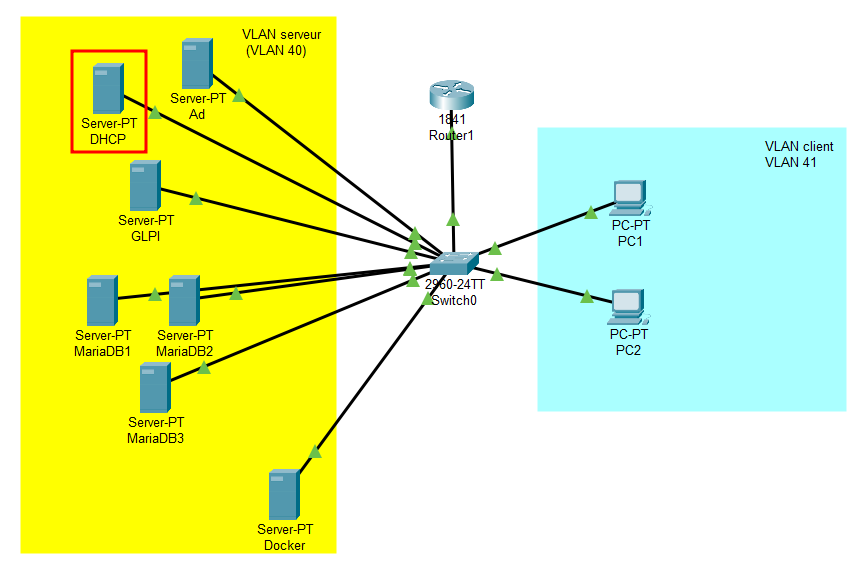

Portfolio Flavien Thaumur
Activités
Mise en place de droit utilisateur (Windows/Linux)
Compétences liées :
J'ai eu l'occasion d'appréhender les droits des utilisateurs sur les clients Windows, les comptes utilisateurs dans un domaine ainsi que pour des utilisateurs Linux.
- Sur un client Windows
Les droits pour les utilisateurs sur un client Windows (ou Windows desktop) est aussi appeler "droits NTFS" et ce gère dossier par dossier ou fichier par fichier avec un système d'héritage de dossier parent.

Ce sont les seules droits possible en parallèle d'un rôle qui peux soit être un rôle administrateur soit simple utilisateur.
- Sur un serveur Windows
Sur un serveur Windows, il s'agit de droit lié à un compte de domaine, il faut donc pour cela être dans un domaine Active Directory ainsi que des utilisateurs pour les appliqués.
Dans un domaine Active Directory, les utilisateurs et les machines sont répertorier dans des Unités Organisationnel (UO ou OU en anglais) et sont affecter à des groupes, eux même faisant partie de groupes, les droits sont
préférablement associer à un groupe plutôt qu'à un utilisateur sauf si il s'agit d'un dossier personnel. On peut également créer des comptes dis "template" afin de facilité la création de ses derniers (les gronpes sont préaffecter).

- Sur Linux
Sur Linux, la gestion historique des droits passe par l'octal sur un format "777" (donne tout les droits à tous). Aujoutd'hui, la configuration ce fait par des lettres : r pour read, w pour write et x pour execute. Dans les deux cas, il faut ajouter d'autre lettres
devant pour définir à qui on donne les droits : u pour user, g pour group et o pour other (les programmes). Entre ces deux groupes de 3 lettres, on doit spécifier par un "+" afin d'ajouter ou un "-" pour retirer les droits, le tout dans la commande "chmod".
On peux spécifier à quel groupe appartient un dossier ou un fichier via la commande "chgrp" et a un utilisateur via la commande "chmod" (on peut y ajouter un groupe en séparant le nom d'utilisateur et le groupe par un ".").
Création de schéma réseau basique
Compétences liées :
Lors de ma formation, j'ai eu plusieurs fois l'occasion de créer une maquette réseau via Cisco Paket Tracer afin d'obtenir un schéma réseaux
plus ou moins complexe.
Dans le cadre de ces traveaux pratique, j'ai dû, par exemple, créer un réseau simulant un accès à internet d'un grande entreprise avec
la définition de routes dynamique et statique.

J'ai également eu l'occasion d'authorisé l'acquisition d'une adresse IP dynamique depuis un vlan exterieur à celui du server DHCP (Dynamic Host Control Protocol).

Participation au référencement d’un site d’entreprise
Compétences liées :
Durant mon stage chez Next Decision, nous avions une consigne importante à respecter : le navigateur internet utilisé doit imperativement démarrer sur la page du site de l'entreprise
afin de favorisé son référencement dans les résultats Google.
Par ailleurs, vous pouvez également participer en allant sur le site de Next Decision.
Création de script de déploiement de machine virtuel
Compétences liées :
Cette activitée fût le fil rouge de mon stage. Il fallait trouver un moyen de créer des machines virtuel, récupérer ses informations réseaux, modifier les noms d'utilisateurs/mot de passe des comptes
et de créer des comptes sur le service apache guacamole pour permettre à des formateurs d'avoir un "bac à sable" pour les stagiaires, et enfin d'envoyer un mail regrouppant les informations
de connexion (Nom de la VM, identifiant et mot de passe guacamole) ainsi que les heures et date de validité.
Pour réalisé ce projet, il m'a fallut utilisé des technologies qui m'était inconnue, à savoir Terraform et Ansible, utilisé via un script bash le tout dans un container Docker
fonctionnant sur un serveur Debian 11.
Dans le script bash, on est invité à saisir les informations utile comme le nom et prénom du formateur, le nom de la formation, les dates et heures de validité ainsi que le nombre de machine virtuel à déployer sur VMware vSphere.
J'y ai également ajouter une option pour supprimé les machines virtuel et compte déployer par le script.
Conteneurisation de service
Compétences liées :
Mise en place d’un environnement de développement via Visual Studio Code
Compétences liées :